Round 6 · mobile review · 2026-09-27
Mobile refinements
Seven items from Nayara's review on her iPhone. Screenshots: headless Chrome at 390 × 844, device scale 2 (item 7 also at 1400px). Branch mobile-r6, preview mobile-r6-nayaramarques.nayara-marques.workers.dev. python3 harness/check.py: PASS, 16 pages at 1400px and 375px.
What needs your answer
Six short phone ledes (item 4) are new copy, marked data-new-copy. The full ledes stay for wider screens.
Read the table in item 4; approve, or edit any line.
Eyebrow to heading (item 7): I used 12px (--space-sm), the distance the DecisionCard already draws, so one value holds everywhere. The other option is 8px (--space-xs), which is tighter under big headings but leaves the cards at 12.
Keep 12px.
New pieces (proposals, CMP-03): .figure--proto, .flow-scroll, .case-details__list, .hero__lede--desk and --phone.
Promote all four to the system; they are small and each serves a rule.
The home chat's frame (item 6) is a fixed box with a soft fade at its top, with no visible outline. A visible frame (a soft recess around thread and composer) would need the composer to go flat inside it (DEP-03).
Keep it without an outline; the page no longer moves, which was the problem.
Two round 6 fixes apply on phones only: equal space around sub-section dividers, and a list's closing rule giving way above the next section's divider. Desktop keeps 56px above a sub-section and 20px under its rule.
Bring both to desktop in a later round, after you have seen them on the phone.
1. Space around dividers
On phones every sub-section divider now has the same space above and below it, 28px (--space-fluid-xl), less than a section's 36px. Before, the space was 56px on one side and 20 to 28px on the other, so a sub-section on a phone sat further from its content than a section. The space above is measured from the last thing above (a card, a figure, a list's last row), because blocks end differently. Where a list's closing rule sat right above a sub-section's own rule, the list's rule gives way, so there is one line (Benchmark, User flows and Key decisions on card insurance). On desktop two things move on card insurance: Benchmark and User flows, whose headings draw their own rule, now take LAY-09's 56px margin (Benchmark had 36px), and the closing rules of the benchmark list and the user flows give way to the sub-section rule under them (they were two lines 37 and 57px apart).
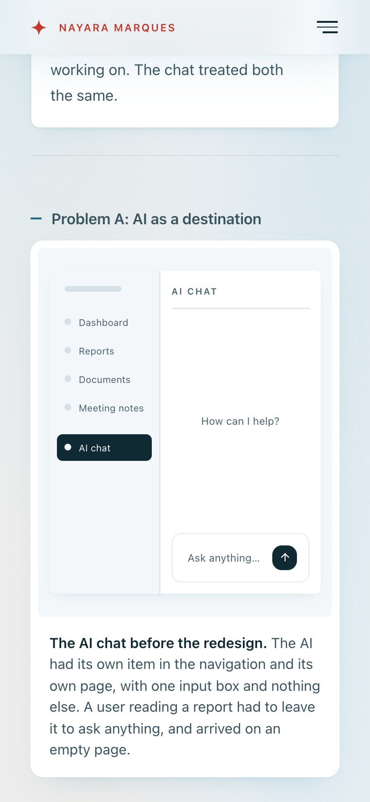
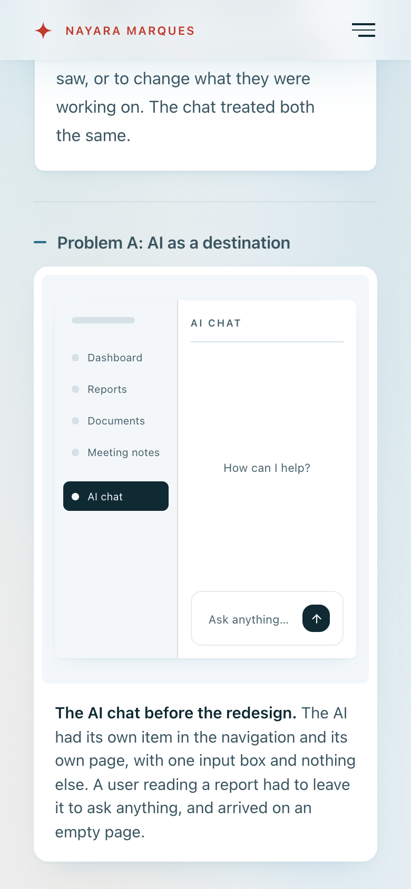
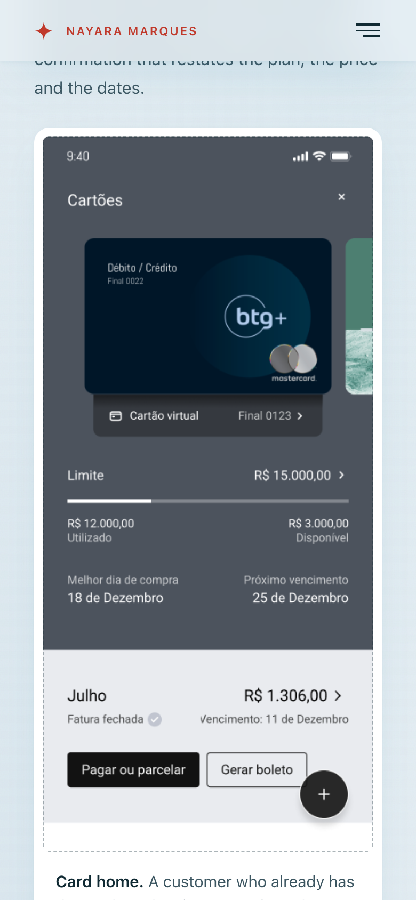
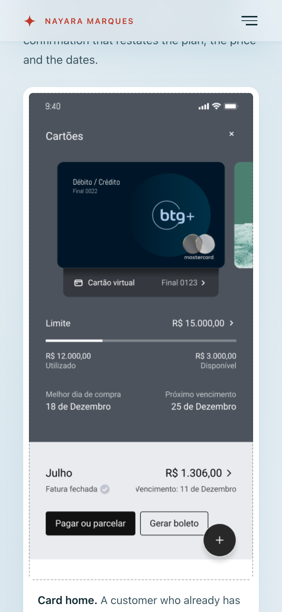
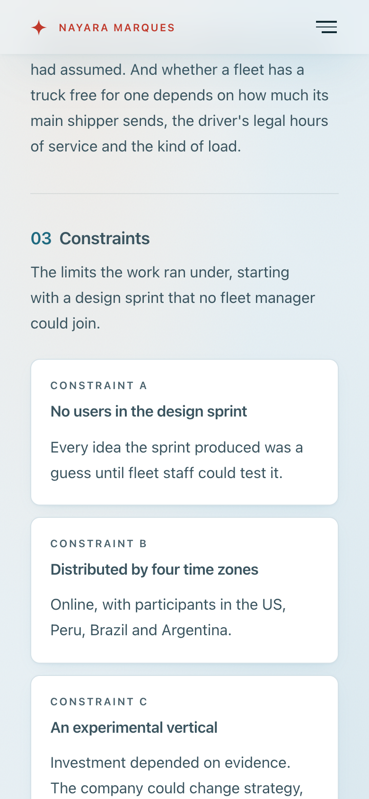
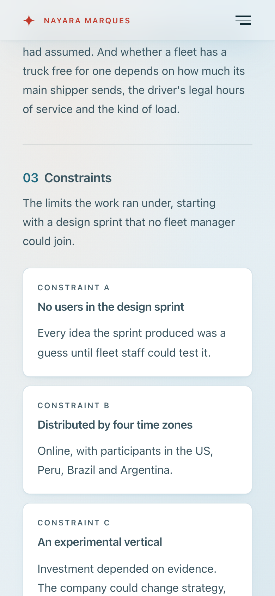
2. Prototypes keep their desktop shape
The composer mockups (Composer spec, 20 frames; AI surfaces, Analysis mode and Inline edit) keep 720px on phones and scroll sideways inside the figure. 720px is the narrowest width at which no composer bar wraps. Captions stay at the screen's width. Menus that already fit a phone, and the edit chat figure (report above chat on phones, your round 5 verdict), are unchanged.
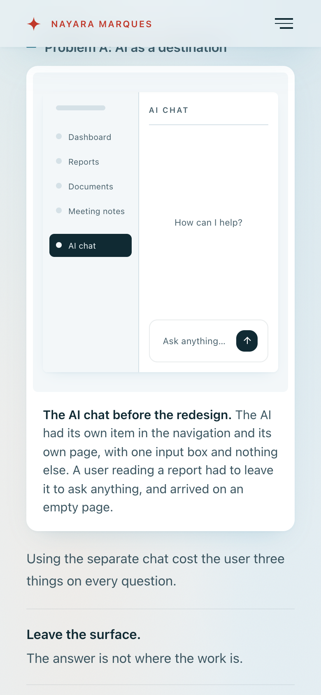
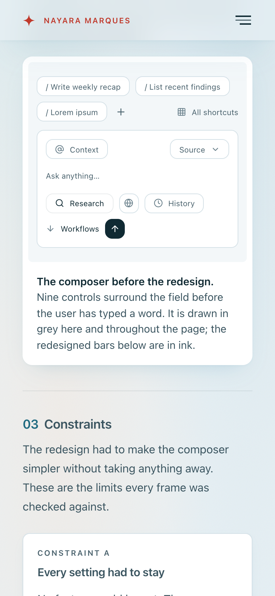
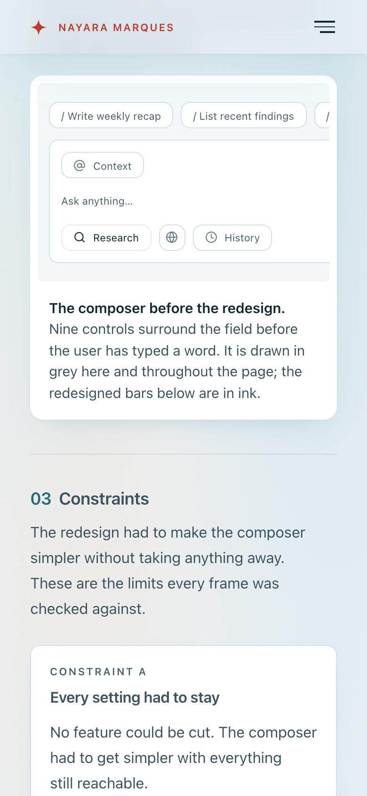
3. Flows reach the screen edge
Card insurance's user flows and its flow placement figure now scroll to both screen edges on phones; the first step still starts on the gutter, and the rules between flows stay at content width. On phones the flow placement figure gives up its white card so nothing cuts the flows short.
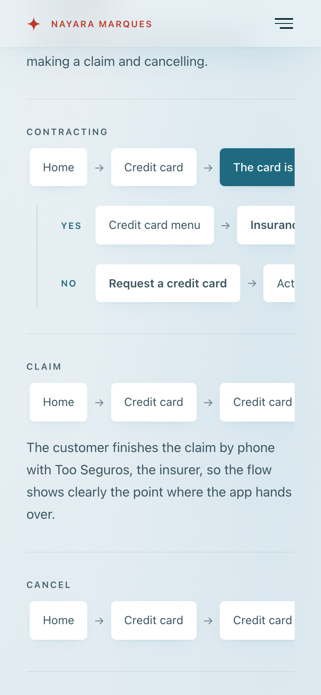
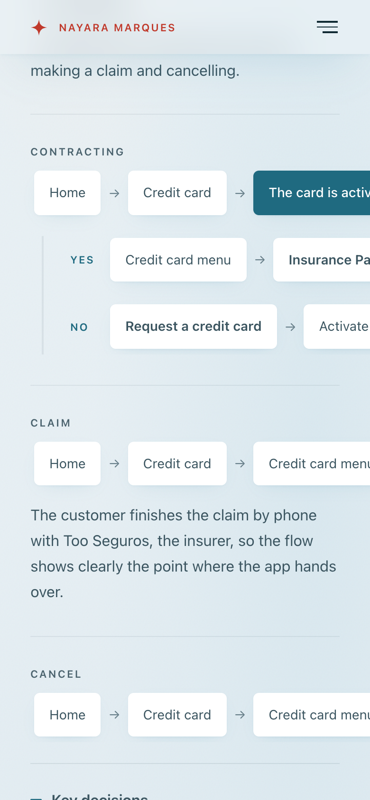
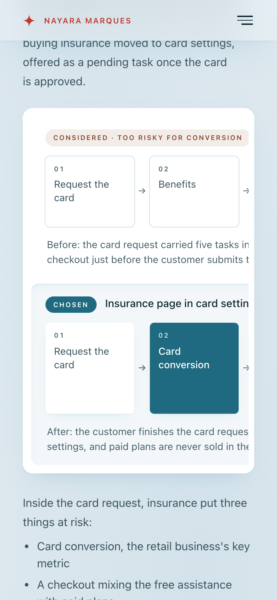
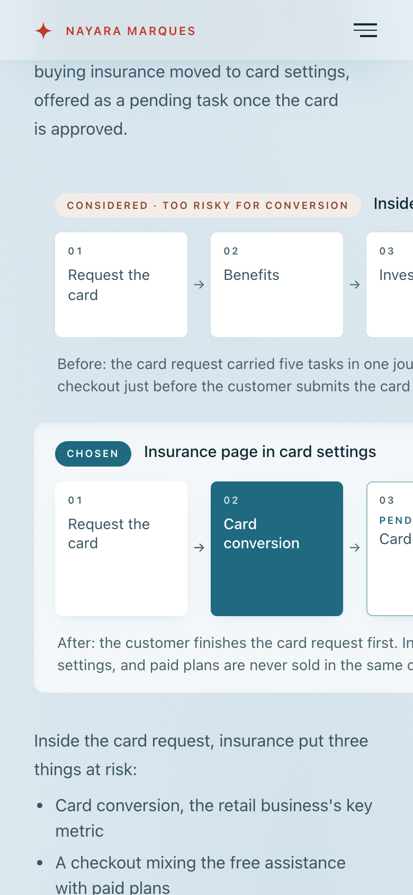
4. Shorter ledes on phones
The lead size is 15px on phones (was 16; 18px on desktop is unchanged; every subtitle follows, TYP-04). Each case also has a short phone lede, three to five lines instead of nine to twelve. The full lede is not deleted: it shows from 561px up.
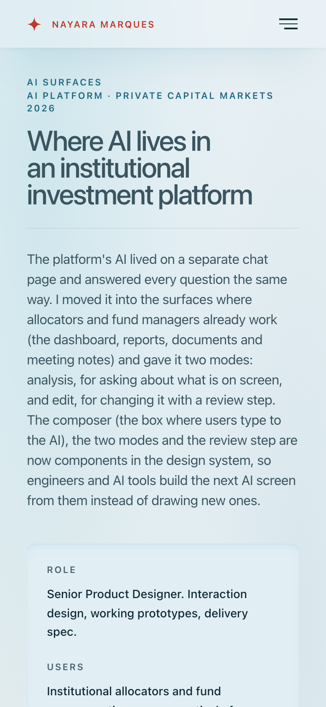
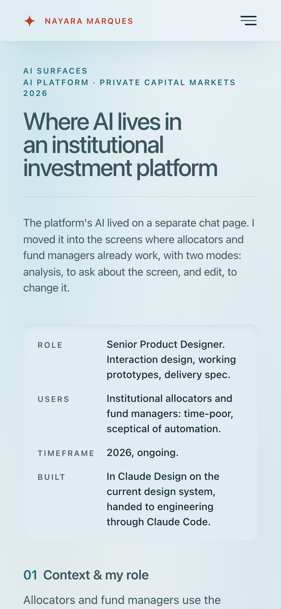
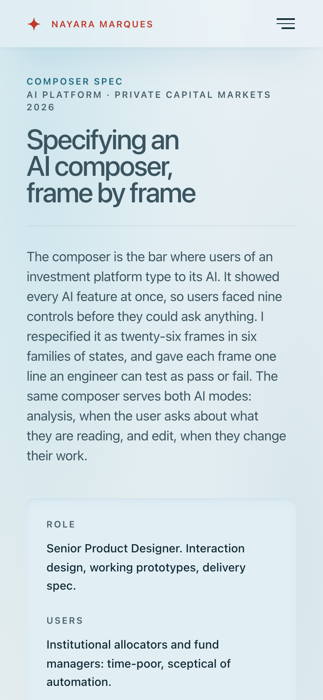
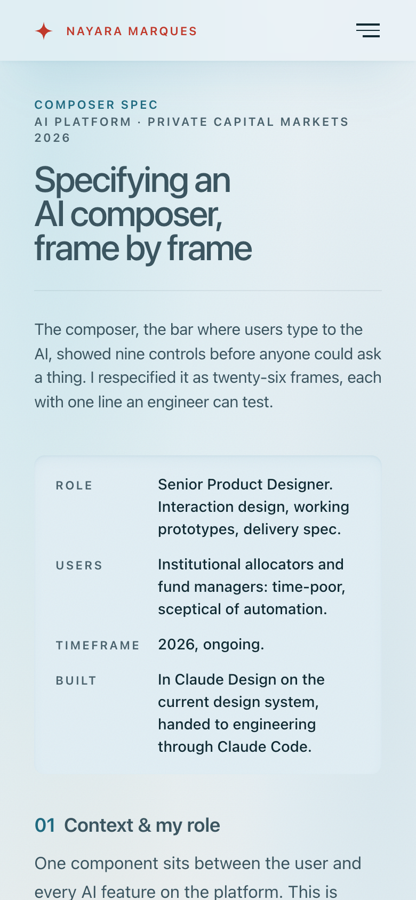
| Key, case | Phone lede (new, for approval) | Full lede (unchanged) |
|---|---|---|
lede-phone-ai-surfacesAI surfaces | The platform's AI lived on a separate chat page. I moved it into the screens where allocators and fund managers already work, with two modes: analysis, to ask about the screen, and edit, to change it. | The platform's AI lived on a separate chat page and answered every question the same way. I moved it into the surfaces where allocators and fund managers already work (the dashboard, reports, documents and meeting notes) and gave it two modes: analysis, for asking about what is on screen, and edit, for changing it with a review step. The composer (the box where users type to the AI), the two modes and the review step are now components in the design system, so engineers and AI tools build the next AI screen from them instead of drawing new ones. |
lede-phone-composer-specComposer spec | The composer, the bar where users type to the AI, showed nine controls before anyone could ask a thing. I respecified it as twenty-six frames, each with one line an engineer can test. | The composer is the bar where users of an investment platform type to its AI. It showed every AI feature at once, so users faced nine controls before they could ask anything. I respecified it as twenty-six frames in six families of states, and gave each frame one line an engineer can test as pass or fail. The same composer serves both AI modes: analysis, when the user asks about what they are reading, and edit, when they change their work. |
lede-phone-design-systemDesign system | AI tools built most new screens, and the design system gave them two answers. I moved the single source into Claude Design and wrote rules so AI tools reuse components instead of guessing. | Most new screens on the platform were built with AI tools, and the design system gave those tools two different answers: one in the design tool, another in the code. I moved the single source into Claude Design, where the screens are built. I wrote eight families of rules so AI tools reuse existing components instead of guessing, and set up a way for anything new an AI tool draws to reach me for review. |
lede-phone-fleet-optimizerFleet Optimizer | Fleet teams received paying loads by email. A sprint designed a platform to replace it, but the people who handle the loads chose the email. We redesigned the email, and the response rate rose 250%. | Fleet Optimizer found paying loads for companies that run their own trucks, to fill trucks that would otherwise drive back empty. The offers went out as a plain match email. A design sprint produced a web platform to replace it, but when people from fleet teams compared the two, the tactical staff, who handle the loads day to day, chose the email; only their managers preferred the platform. We redesigned the email instead, and the response rate rose 250%. |
lede-phone-advisors-platformAdvisors platform | BTG Pactual’s advisors worked across scattered tools. I designed one workspace for four business verticals, tested it at 90% acceptance, and led it to a first release all four directors signed. | BTG Pactual’s investment advisors worked across several scattered tools. I designed one workspace for them, used in four business verticals: a dashboard each office configures, a side menu of the advisor's tools, and a client page that holds everything about one client. The directors of the four verticals could each veto the project. I led it from 12 interviews to a concept test with 90% acceptance, and to one first release (MVP) all four directors signed. |
lede-phone-card-insuranceCard insurance | Card insurance in BTG+ was a fixed bundle at one price. I designed a modular version, and my usability test moved it out of the card request into the card's settings, to protect card sign-ups. | Customers of BTG+, the bank's app, could only buy card insurance as a fixed bundle at one price. I designed a modular version: the customer chooses a level of cover for card theft and misuse, and adds an assistance, a service such as pet care or home repairs. My usability test then showed that selling it during the card request put card sign-ups at risk, so the whole flow moved to the card's settings. |
5. Case details
One definition list, styled once in components.css in the Tools look (eyebrow labels, 14px values at 500 in strong ink). On phones it is a compact list, each label beside its value, like a spec sheet: about half the height it was. Two columns from 561 to 860px; four on desktop, unchanged. Three cases had set their values at 16px in body ink; all six now match. The inner shade was there (a box-shadow, which iOS Safari draws); what was missing next to About's Tools was the note's grain, now added.
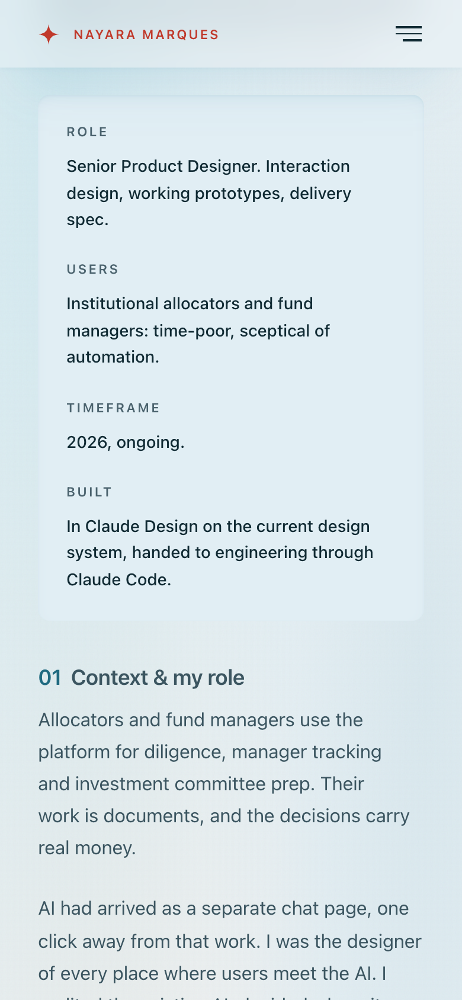
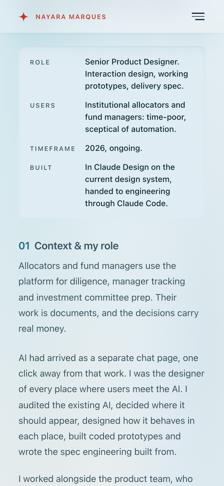
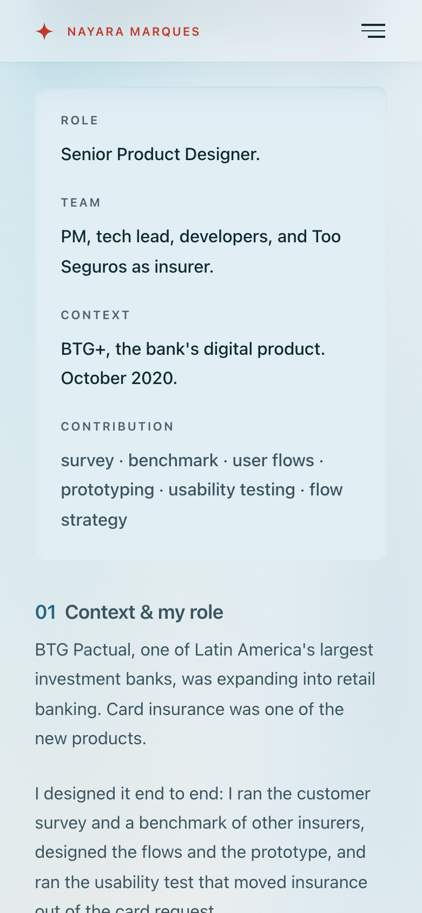
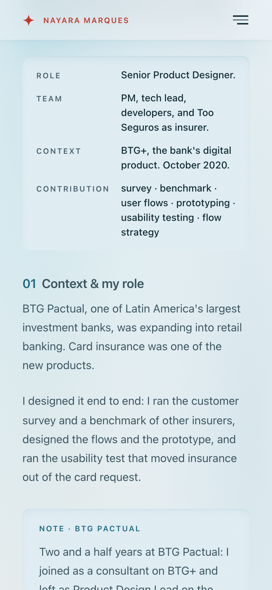
6. The home chat on phones
Up to 860px the chat thread sits in a frame of fixed height (three two-line messages). New messages push the old ones up inside the frame, where they fade out; the intro, the actions and the page below stay put.
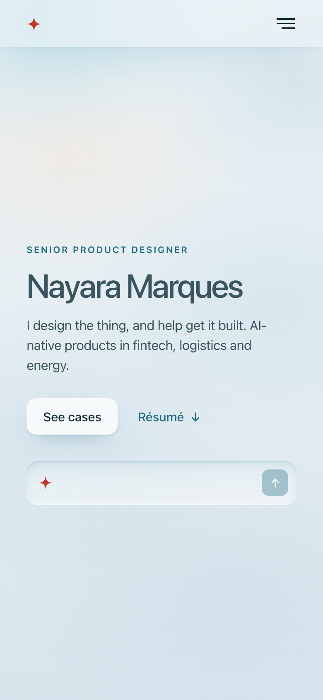
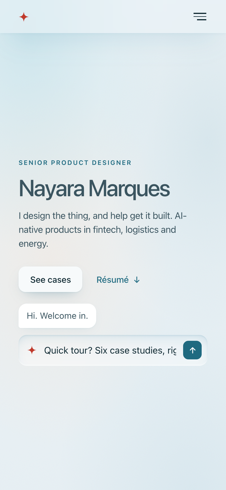
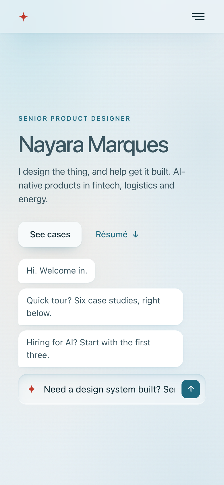
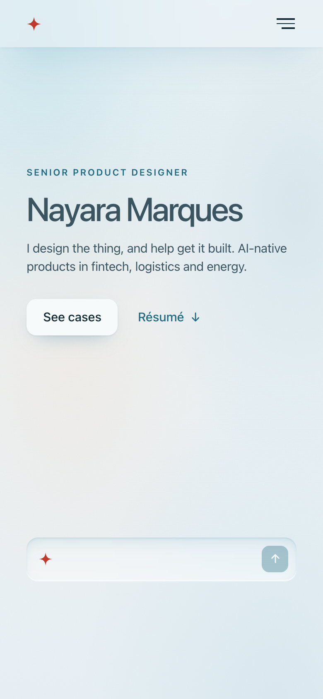
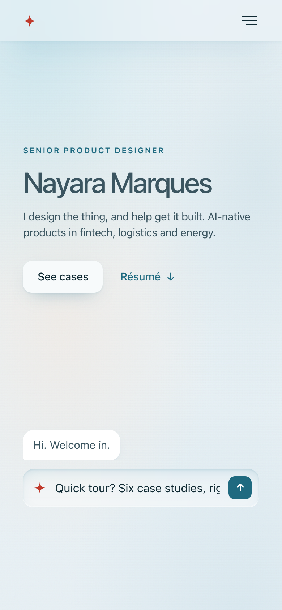
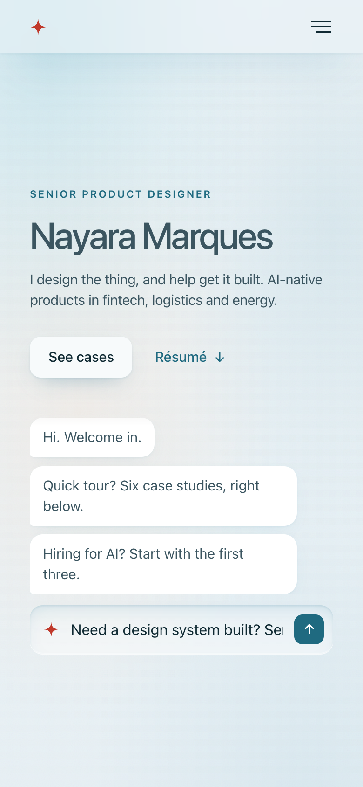
7. Eyebrow to heading
One distance everywhere: 12px from the eyebrow to the heading it labels (TYP-05), set once in components.css. Before, it ran from 0 (section heads on the service pages, "Questions") to 28px (the ink band on cases), with 10, 12 and 16 in between. Heroes keep HERO-01's 16px, which already fixes the title's height on every page.
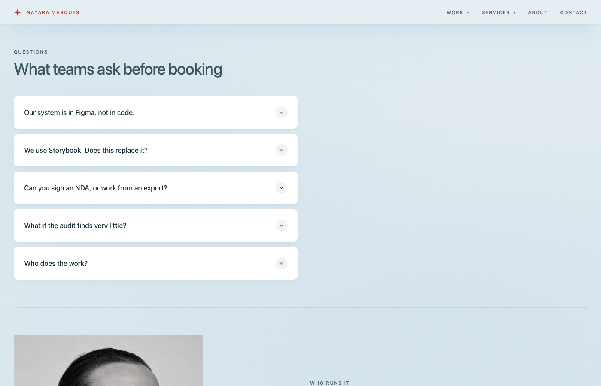
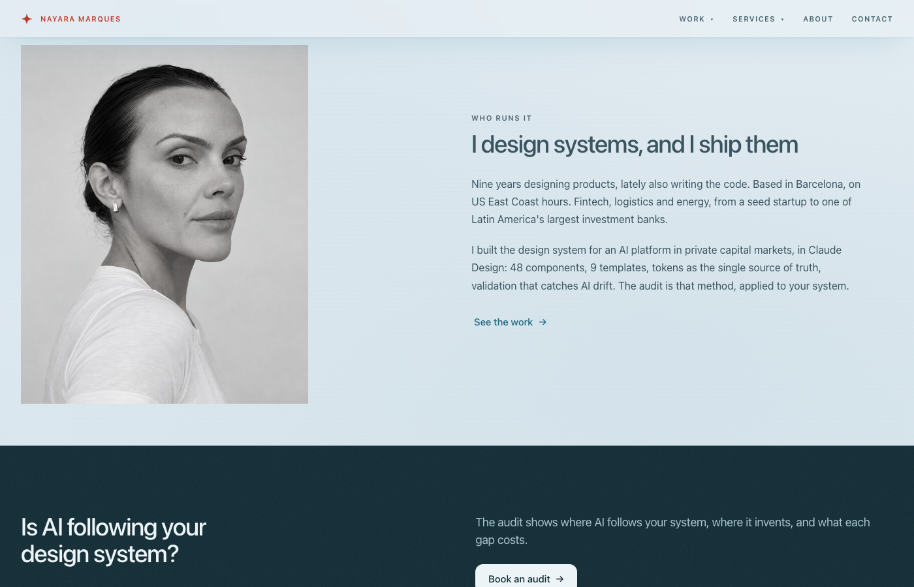
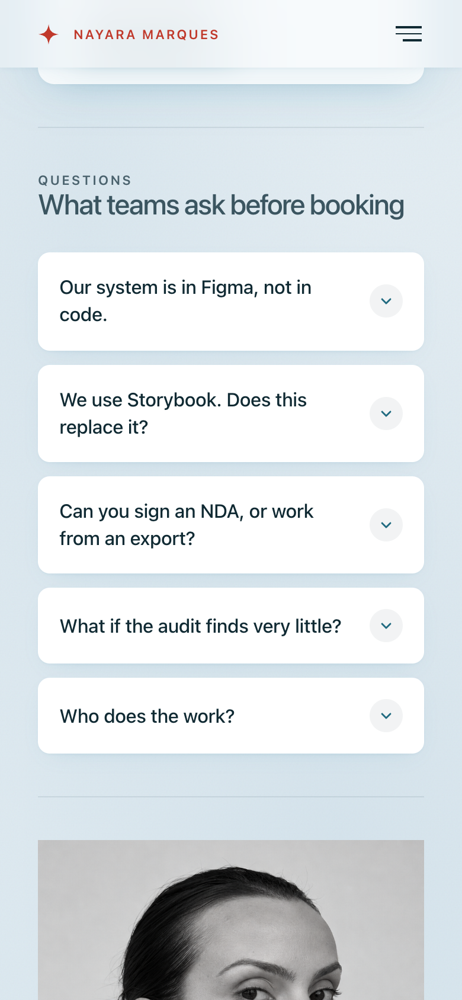
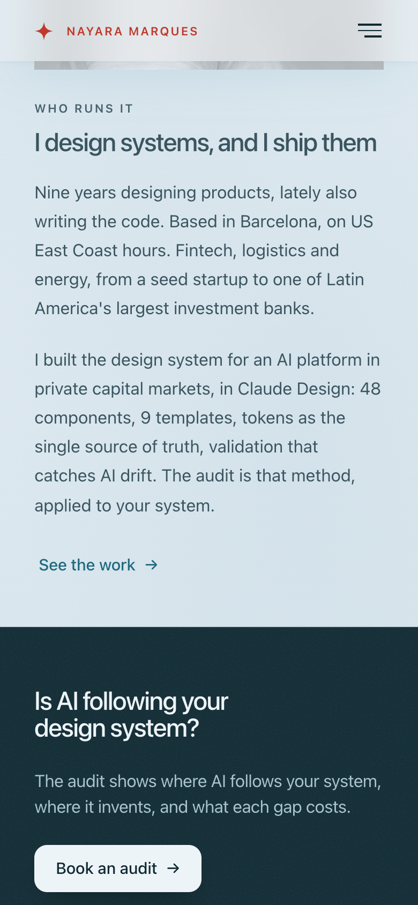
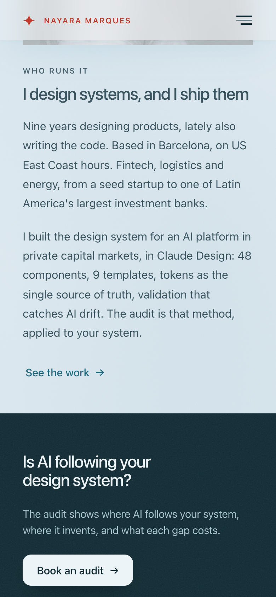
Rules and checks
| Rule | What changed | Check |
|---|---|---|
| LAY-09, SEC-04 | Phones: 28px above and below every sub-section divider; never two lines above a sub-section | check_pages at 375px |
| LAY-06 | Prototypes keep their desktop shape and scroll in the figure | check_pages: nothing wraps in .figure--proto |
| FLW-01 | Flows run to both screen edges on phones, first step on the gutter | check_pages: the scroller spans the screen |
| TYP-04 | Lead 15px on phones; a case lede at most five lines on a phone | check_pages: line count |
| LAY-07 | Case details: one list, compact on phones, the note's grain | by eye |
| HERO-02 | The home chat is framed at a fixed height up to 860px | check_pages: the thread clips |
| TYP-05 (new) | Eyebrow to heading, 12px everywhere; heroes 16px | check_pages at 1400px and 375px, within 1px |